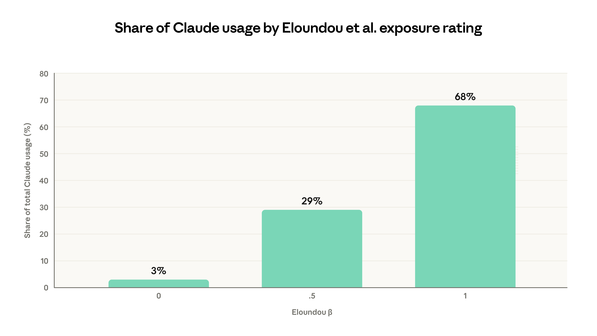
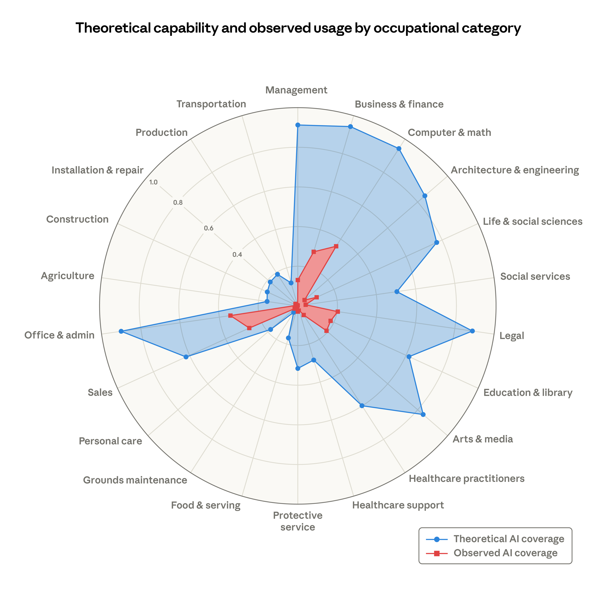
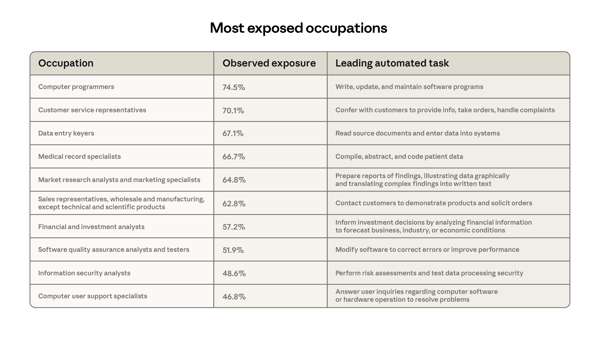
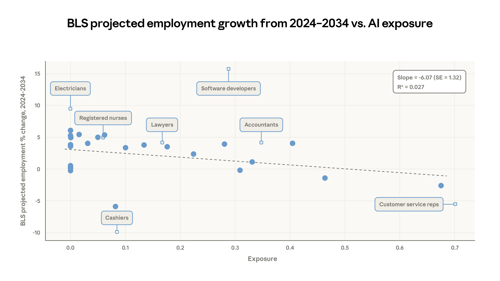
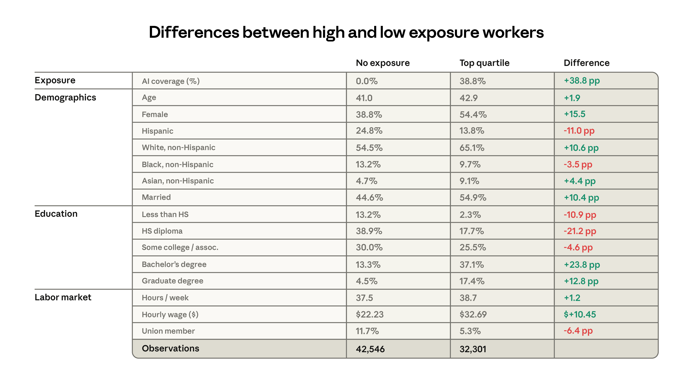
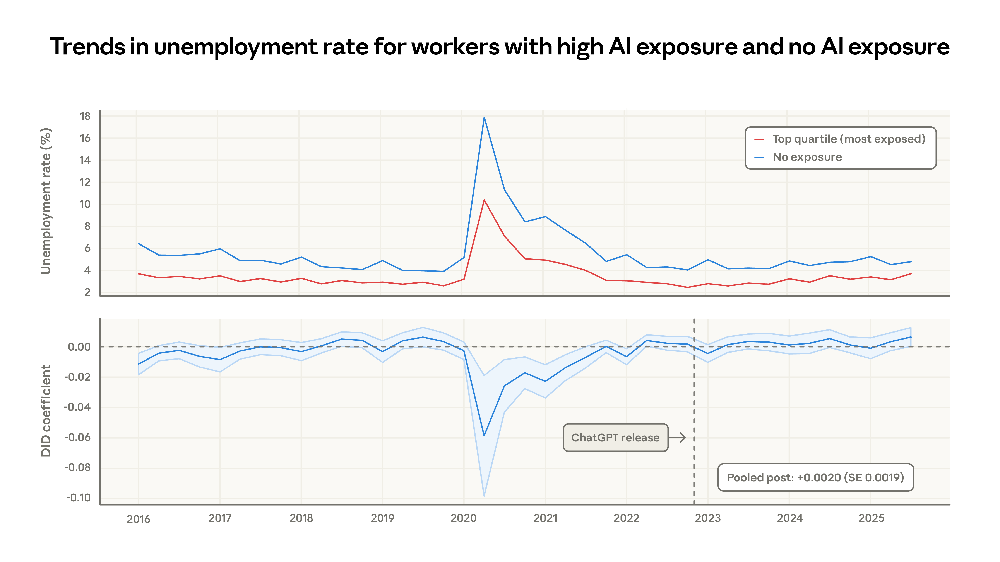
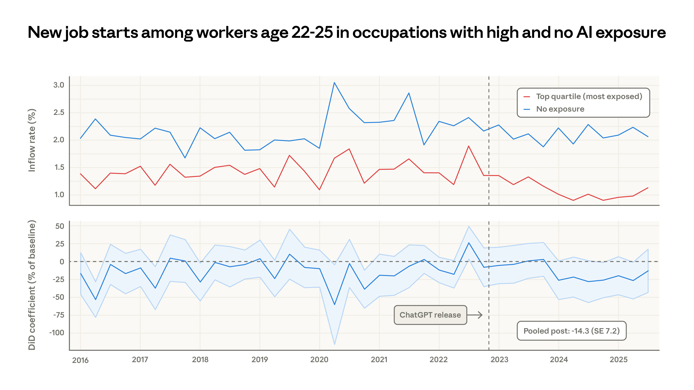

主要發現
- 我們引入了一個新的 AI 取代風險衡量指標——「觀察到的暴露度（observed exposure）」，它結合了 LLM 的理論能力與真實世界的使用數據，並賦予自動化（而非增強型）及與工作相關的使用情境更高的權重。
- AI 距離達到其理論能力還有很長一段路要走：實際覆蓋率僅佔可行範圍的一小部分。
- 根據美國勞工統計局（BLS）的預測，觀察到的暴露度較高的職業，到 2034 年的預期增長會較低。
- 在暴露度最高的職業中，工作者更有可能是年長者、女性、受過較高教育且薪水較高的人。
- 自 2022 年底以來，我們並未發現高暴露度工作者的失業率有系統性的增加，但我們發現一些暗示性證據，表明在這些暴露度較高的職業中，年輕工作者的招募速度已經放緩。
簡介 (Introduction)
AI 的快速普及引發了一波測量與預測其對勞動市場影響的研究熱潮。但過去類似方法的記錄讓我們有理由保持謙遜。
例如，過去一項衡量工作可離岸外包程度的著名研究，認定美國約有四分之一的工作面臨風險，但十年過去了，這些工作大部分仍維持著健康的就業增長。政府自己的職業增長預測雖然方向正確，但除了過去趨勢的線性外推外，幾乎沒有增加什麼預測價值。即便事後諸葛，重大經濟干擾對勞動市場的影響通常依然不明朗。關於工業機器人對就業影響的研究得出了相反的結論，而歸咎於中國貿易衝擊的失業規模至今仍備受爭議。
在本文中，我們提出了一個理解 AI 對勞動市場影響的新框架，並使用早期數據對其進行了測試，結果發現至今鮮少有證據表明 AI 已經影響了就業。我們的目標是建立一個衡量 AI 如何影響就業的方法，並定期重新審視這些分析。這個方法無法捕捉 AI 重塑勞動市場的每一個管道，但透過現在（在顯著影響出現之前）奠定這些基礎，我們希望未來的發現能比事後分析更可靠地識別出經濟干擾。
AI 的影響有可能是顯而易見的。這個框架最為實用的情境是當影響尚不明確時——它可以幫助我們在取代現象顯現之前，識別出最脆弱的工作。
反事實 (Counterfactuals)
當影響巨大且突然時，因果推論會比較容易。COVID-19 疫情及相應的政策措施造成了極其明顯的經濟干擾，以至於對於許多問題來說，根本不需要複雜的統計方法。例如，疫情爆發頭幾週失業率急遽上升，幾乎沒有其他解釋的空間。
然而，AI 的影響可能不像 COVID，而更像是網際網路或與中國的貿易。從整體的失業數據中，其影響可能不會立即顯現；貿易政策和商業週期等因素可能會模糊趨勢線的解讀。
一種常見的方法是比較受 AI 影響較大與較小的工作者、公司或行業之間的結果，以將 AI 的影響與其他干擾力量隔離開來。暴露度通常定義在任務層面：例如，AI 可以批改作業，但無法管理教室，因此教師被認為比那些整個工作都可以遠距完成的工作者暴露度更低。
我們的研究遵循這種基於任務的方法，結合了理論上的 AI 能力和真實世界的使用情況，然後再匯總到職業層面。
衡量暴露度 (Measuring exposure)
我們的方法結合了三個來源的數據：
- O*NET 資料庫：其中列舉了美國約 800 種獨特職業的相關任務。
- 我們自己的使用數據（如 Anthropic 經濟指數中測量的數據）。
- Eloundou 等人（2023）的任務層面暴露度估計：這些估計衡量了 LLM 理論上是否有可能使任務速度至少提高兩倍。
Eloundou 等人的指標 β 以一個簡單的尺度對任務進行評分：如果一項任務可以單獨由 LLM 提升兩倍速度，則為 1；如果需要建立在 LLM 之上的額外工具或軟體，則為 0.5；否則為 0。
為什麼實際使用情況會低於理論能力？一些理論上可行的任務可能因為模型的限制而沒有出現在使用數據中。其他任務可能因為法律限制、特定的軟體需求、人類驗證步驟或其他障礙而擴散緩慢。例如，Eloundou 等人將「授權藥物補充並向藥房提供處方資訊」標記為完全暴露（β=1）。我們還沒有觀察到 Claude 執行這項任務，儘管評估似乎是正確的，因為理論上它確實可以被 LLM 加速。
話雖如此，這些理論能力和實際使用情況的衡量指標是高度相關的。如圖 1 所示，在前四份《經濟指數》報告中觀察到的任務中，有 97% 屬於 Eloundou 等人評定為理論上可行的類別（β=0.5 或 β=1.0）。

一個新的職業暴露度指標
我們的新指標「觀察到的暴露度（observed exposure）」，旨在量化：在 LLM 理論上可以加速的任務中，哪些實際上在專業環境中看到了自動化的使用？理論能力涵蓋了更廣泛的任務。透過追蹤這個差距如何縮小，觀察到的暴露度提供了對新興經濟變化的洞察。
我們的指標定性地捕捉了 AI 使用的幾個方面，我們認為這些方面可以預測對工作的影響。如果符合以下條件，一份工作的暴露度會更高：
- 其任務在理論上可以使用 AI 完成
- 其任務在 Anthropic 經濟指數中有顯著的使用量
- 其任務在與工作相關的情境中執行
- 它具有較高比例的自動化使用模式或 API 實作
- 受 AI 影響的任務佔據了該職位更大的比例
我們在附錄中提供了數學細節。如果 LLM 理論上能勝任的任務在 Claude 流量中看到了足夠的工作相關使用量，我們就將其計入已涵蓋。接著，我們根據執行任務的方式進行調整：完全自動化的實作獲得全部權重，而增強型使用獲得一半權重。最後，將任務層面的覆蓋率衡量指標平均到職業層面，並以花費在每項任務上的時間比例作為權重。
圖 2 顯示了觀察到的暴露度（紅色）與 Eloundou 等人的 β（藍色）的比較，說明了我們平台上理論與實際使用之間的差異，並按廣泛的職業類別分組。我們計算的方法是：首先以我們的時間比例衡量指標作為權重平均到職業層面，然後以總就業人數作為權重平均到職業類別。例如，β 指標顯示，電腦與數學（94%）以及辦公室與行政（90%）職業的大部分任務都有 LLM 滲透的空間。

隨著能力的提升、採用率的普及和部署的深化，紅色區域將擴大以覆蓋藍色區域。但同時也有一個很大的未涵蓋區域；當然，許多任務仍然超出 AI 的能力範圍——從修剪樹木和操作農業機械等體力農業工作，到在法庭上代表客戶等法律任務。
圖 3 顯示了在此指標下暴露度最高的十種職業。與其他顯示 Claude 被廣泛用於寫程式的數據一致，電腦程式設計師（Computer Programmers）位居榜首，覆蓋率達 75%，其次是客戶服務代表（Customer Service Representatives），我們越來越多地在第一方 API 流量中看到他們的主要任務。最後，資料輸入員（Data Entry Keyers）的覆蓋率為 67%，他們閱讀原始文件並輸入資料的主要任務已出現顯著的自動化。

在底端，30% 的工作者覆蓋率為零，因為他們的任務在我們數據中出現的頻率太低，無法達到最低門檻。這個群體包括，例如，廚師、摩托車修理工、救生員、酒保、洗碗工和更衣室服務員。
暴露度與預期就業增長及工作者特徵的關係
美國勞工統計局（BLS）定期發布就業預測，最新版本涵蓋了 2024 年至 2034 年每種職業的預期就業變化。在圖 4 中，我們比較了我們的工作級別覆蓋率指標與他們的預測。
以當前就業人數加權的職業層面迴歸分析發現，對於觀察到的暴露度較高的工作，其增長預測略弱。覆蓋率每增加 10 個百分點，BLS 的增長預測就會下降 0.6 個百分點。這提供了一些驗證，因為我們的指標追蹤了勞動市場分析師獨立得出的估計，儘管這種關係很微弱。有趣的是，如果單獨使用 Eloundou 等人的指標，則不存在這樣的相關性。

圖 5 顯示了 ChatGPT 發布前三個月（2022 年 8 月至 10 月）暴露度最高的前四分之一工作者與 30% 零暴露度工作者的特徵。這兩個群體差異很大。暴露度較高的群體中，女性的可能性高出 16 個百分點，白人的可能性高出 11 個百分點，而亞洲人的可能性幾乎是兩倍。他們的平均收入高出 47%，並且教育程度更高。例如，擁有研究所學位的人在未暴露群體中佔 4.5%，但在最高暴露群體中佔 17.4%，相差近四倍。

優先關注的結果
掌握了這些暴露度指標後，問題在於我們要尋找什麼。研究人員採取了不同的方法。例如，Gimbel 等人追蹤職業組合的變化，認為任何由 AI 引起的重大經濟結構重組都會表現為工作分佈的變化。（他們發現到目前為止，變化並不明顯。）Brynjolfsson 等人觀察按年齡組劃分的就業水準，而 Acemoglu 等人和 Hampole 等人則使用職位發布數據。
我們將「失業」作為優先關注的結果，因為它最直接地反映了潛在的經濟傷害——一個失業的工作者想要一份工作，但尚未找到。在這種情況下，職缺發布和就業並不一定意味著需要政策回應；高暴露度職位發布的減少可能會被相關職位空缺的增加所抵消。AI 對勞動市場最有害的發展，可以說應該包括一段失業率增加的時期，因為被取代的工作者會尋找替代方案。當期人口調查非常適合追蹤這一點，因為失業的受訪者會報告他們以前的工作和行業。
初步結果
接下來，我們研究失業趨勢，將我們的職業層面指標與當期人口調查中的受訪者進行比對。
在解釋我們的覆蓋率指標時，一個關鍵問題是哪些工作者應該被視為「受干預（treated）」？為了簡單起見，我們將分析的重點放在一個觀點上：影響應該在平均暴露度最高的群體中最為明顯。我們將時間加權任務覆蓋率處於最高四分之一的工作者與處於最低四分之一的工作者進行比較。
圖 6 的上半部顯示了自 2016 年以來，處於最高暴露度四分之一的工作者和未暴露群體的原始失業率趨勢。在 COVID 期間，受 AI 影響較小的工作者（他們更有可能從事面對面的工作）的失業率上升幅度要大得多。自那時起，這兩組之間的趨勢在很大程度上是相似的。下半部在雙重差分框架（difference-in-differences framework）中測量了暴露度最高和最低工作者之間的差距大小。自 ChatGPT 發布以來，差距的平均變化很小且不顯著，這表明暴露度較高群體的失業率略有上升，但影響與零無異。

這個框架能識別什麼樣的情境？大約 1 個百分點的失業率差異性增加將是可以檢測到的。如果前 10% 的工作者都被解僱，那麼前四分之一群體的失業率將從 3% 增加到 43%，總體失業率將從 4% 增加到 13%。
一個較小但仍令人擔憂的影響可能是類似於「白領工作者大衰退」的情境。在 2007-2009 年的經濟大衰退期間，美國的失業率翻了一倍，從 5% 升至 10%。如果在暴露度最高的前四分之一群體中出現這樣的翻倍，其失業率將從 3% 上升至 6%。這在我們的分析中也應該是可見的。
一個特別令人擔憂的群體是年輕工作者。Brynjolfsson 等人報告稱，在暴露的職業中，22 至 25 歲工作者的就業率下降了 6-16%。他們將這種下降主要歸因於招募放緩，而不是離職率增加。
我們發現，暴露職業中年輕工作者的失業率持平。但招募放緩不一定表現為失業率增加。為了解決直接招募的問題，我們計算隨時間推移，開始在較高與較低暴露度職業中從事新工作的年輕（22-25 歲）工作者百分比。圖 7 顯示了年輕工作者的每月就業率，並根據他們是進入高暴露度還是低暴露度職業進行劃分。

除了 2020-2021 年的一些大幅波動外，這些序列在 2024 年明顯出現分歧，年輕工作者被招募到暴露職業的可能性相對較低。與 2022 年相比，後 ChatGPT 時代暴露職業的就業率平均估計下降了 14%，儘管這勉強達到統計上的顯著水準。（25 歲以上的工作者則沒有這種下降。） 這可能提供了 AI 對就業早期影響的一些訊號，但還有幾種替代解釋。未被錄用的年輕工作者可能留在原有的工作崗位上、從事不同的工作，或者重返校園。
討論
本報告介紹了一種理解 AI 對勞動市場影響的新指標，並研究了其對失業和招募的影響。如果某項工作的大多數任務在理論上可由 LLM 完成，且在我們平台上觀察到其用於自動化、與工作相關的情境中，那麼這份工作受 AI 的影響（暴露度）就越高。我們發現電腦程式設計師、客戶服務代表和財務分析師是受影響最深的職業之一。利用美國的調查數據，我們並未發現處於最高暴露度職業的工作者在失業率上受到影響，儘管有初步證據表明，對於 22-25 歲的年輕人來說，進入這些專業的招募速度略有放緩。
我們的工作是記錄 AI 對勞動市場影響的第一步。我們希望這些分析步驟能為未來持續評估這個重要議題奠定基礎。